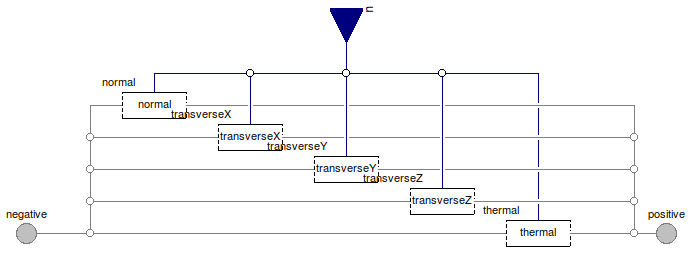

Table of Contents
- User's Guide
- BCs
- Sensors
- Assemblies
- Regions
- Subregions
- Connectors
- Characteristics
- Units
- Quantities
- BaseClasses
Download
- Latest: FCSys-2.0.zip (**Please check back soon or contact kdavies4 at gmail.com.)

| Name | Description |
|---|---|
| BC for a pair of faces of a Species model (single-species) | |
| Material BCs | |
| Mechanical BCs | |
| Thermal BCs | |
| Base classes (not for direct use) |
 FCSys.BCs.FaceDifferential.Species
FCSys.BCs.FaceDifferential.Species
| Type | Name | Default | Description |
|---|---|---|---|
| Axis | axis | Axis normal to the face | |
| Normal linear momentum | |||
| Boolean | isobaric | false | Isobaric condition |
| Density | normal | redeclare Material.Density n... | Type of condition |
| Heat | |||
| Temperature | thermal | redeclare Thermal.Temperatur... | Type of condition |
| X-axis linear momentum | |||
| Boolean | inviscidX | false | Inviscid |
| Velocity | transverseX | redeclare Mechanical.Velocit... | Type of condition |
| Y-axis linear momentum | |||
| Boolean | inviscidY | true | Inviscid |
| Velocity | transverseY | redeclare Mechanical.Velocit... | Type of condition |
| Z-axis linear momentum | |||
| Boolean | inviscidZ | false | Inviscid |
| Velocity | transverseZ | redeclare Mechanical.Velocit... | Type of condition |
| Type | Name | Description |
|---|---|---|
| RealInputBus | u | Input bus for external signal sources |
| Face | negative | Negative face |
| Face | positive | Positive face |
model Species "BC for a pair of faces of a Species model (single-species)" extends BaseClasses.PartialSpecies; parameter Axis axis "Axis normal to the face"; // X-axis linear momentum parameter Boolean inviscidX=false "Inviscid"; // Note: Dymola 7.4 doesn't recognize enumerations in the dialog enable // option, e.g., // enable=axis <> Axis.x. // Therefore, the values of the enumerations are specified numerically.replaceable Mechanical.Velocity transverseX(spec(k=0)) if axis <> Axis.x and not inviscidX constrainedby Mechanical.BaseClasses.PartialBC "Type of condition"; // Y-axis linear momentum parameter Boolean inviscidY=true "Inviscid";replaceable Mechanical.Velocity transverseY(spec(k=0)) if axis <> Axis.y and not inviscidY constrainedby Mechanical.BaseClasses.PartialBC "Type of condition"; // Z-axis linear momentum parameter Boolean inviscidZ=false "Inviscid";replaceable Mechanical.Velocity transverseZ(spec(k=0)) if axis <> Axis.z and not inviscidZ constrainedby Mechanical.BaseClasses.PartialBC "Type of condition"; FCSys.Connectors.Face negative( final axis=axis, final isobaric=isobaric, final inviscidX=inviscidX, final inviscidY=inviscidY, final inviscidZ=inviscidZ) "Negative face"; FCSys.Connectors.Face positive( final axis=axis, final inviscidX=inviscidX, final inviscidY=inviscidY, final inviscidZ=inviscidZ) "Positive face"; equation // Materialconnect(material.negative, negative.normal); connect(material.positive, positive.normal); // X-axis linear momentumconnect(transverseX.negative, negative.transverseX); connect(transverseX.positive, positive.transverseX); connect(u.transverseX, transverseX.u); // Y-axis linear momentumconnect(transverseY.negative, negative.transverseY); connect(transverseY.positive, positive.transverseY); connect(u.transverseY, transverseY.u); // Z-axis linear momentumconnect(transverseZ.negative, negative.transverseZ); connect(transverseZ.positive, positive.transverseZ); connect(u.transverseZ, transverseZ.u); // Heatconnect(thermal.negative, negative.thermal); connect(thermal.positive, positive.thermal); end Species;